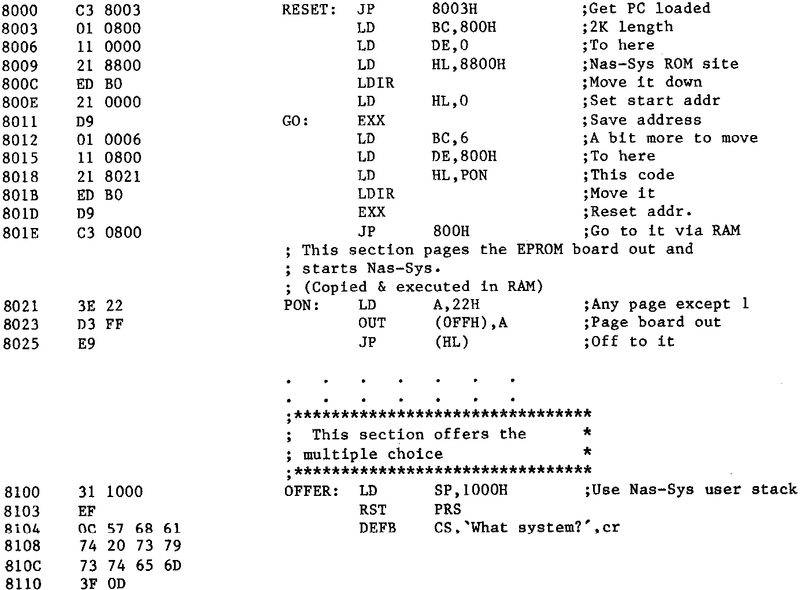

INMC 80 News |
May–September 1981 · Issue 4 |
| Page 43 of 71 |
|---|
To return to the main topic of the article – we now have a working EPROM board, what do we do with it? First of all all programs that we wish to have “on-call” have to be programmed into EPROM and located on the board. The addresses at which they are placed are purely arbitary, and bear no relation to their execution addresses. (I picked 8000 upwards). The only constraints are that they must not overlay any area of memory that is used by the Nascom on-board memory, (as it does not respond to RAMDIS), or overlay RAM that will be used for the Z80’s stack while the board is active. Next, two short control programs have to be written for the board, one to deal with power-up, the other to make it easy to use. The remaining things to do before inserting it is to select it to respond to page 1 – the power-on page – and to set the system’s power-on-jump address to that of our control program on the EPROM board.
As I intended to work mainly in a disk environment but did not want to burn my bridges behind me, I left the Nas-Sys 3 EPROM on the N2 board and made a modified copy of it. This version supported screen and workspace at F800-FFFF, and included a small addition (I reduced the sign-on message to accommodate it) which we shall see in a moment. By throwing one switch I could still return to a standard Nascom set-up should the occasion arise.
The power-on (or Reset) program is shown below together with parts of the other control program. The purpose of the power-on section is to copy the modified Nas-Sys to RAM at 0, and then to jump to it paging out the EPROM board on the way.(*** Note that we must be off the board before it’s paged out otherwise our program will suddenly vanish as the OUT instruction is executed! ***).
| Page 43 of 71 |
|---|